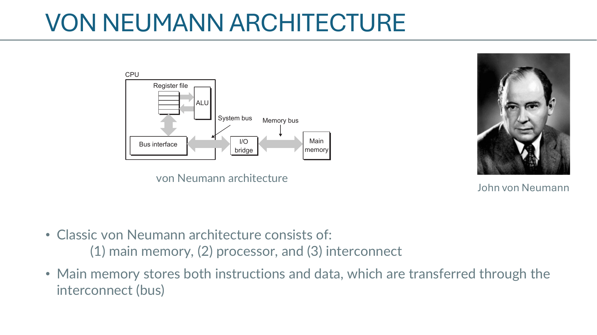
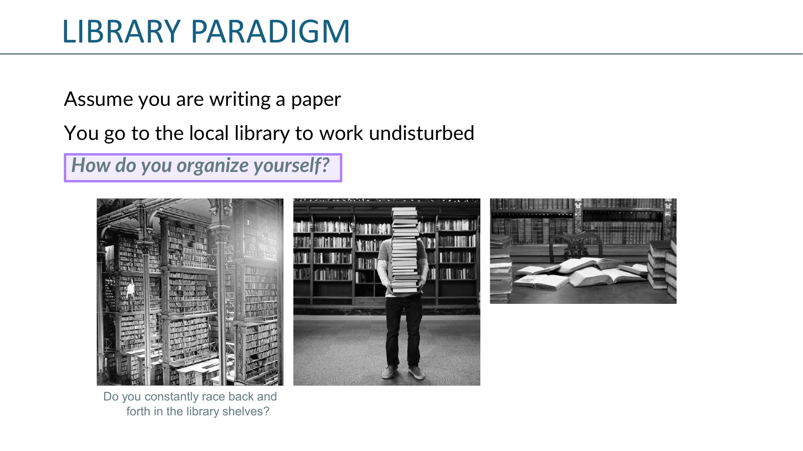
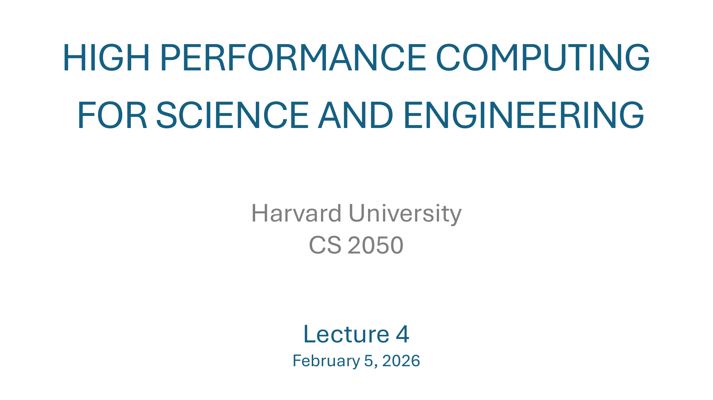
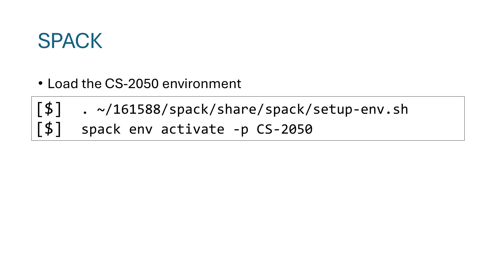
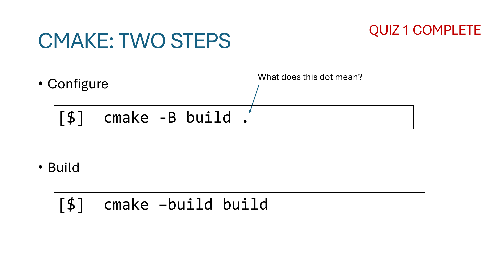
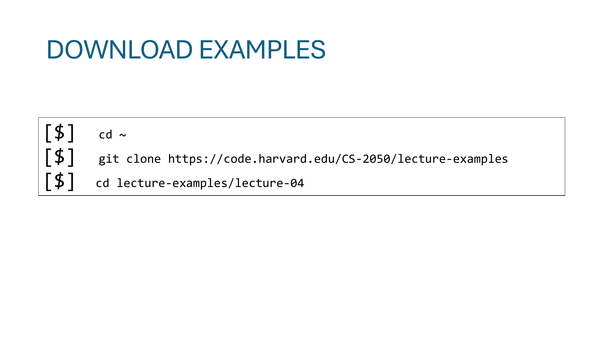
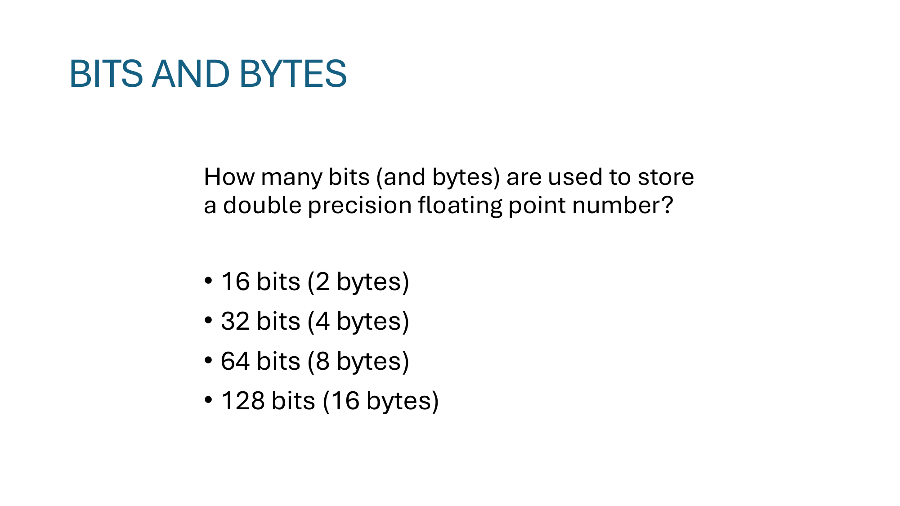
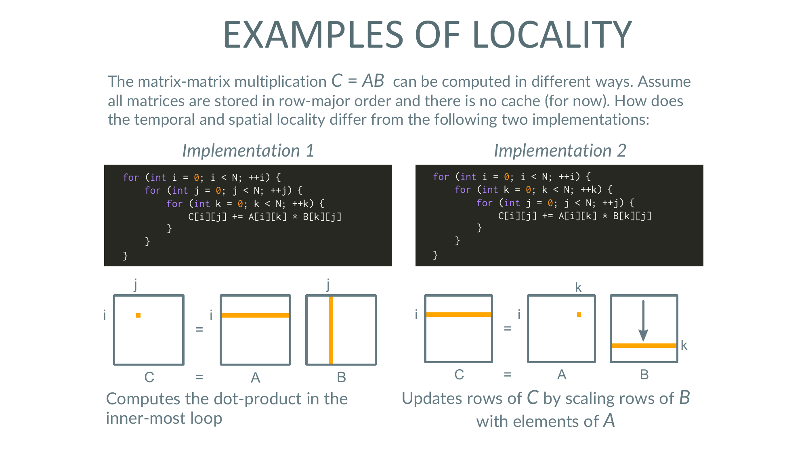

主题：Spack 环境 + Cache 实证测量 + 矩阵乘 locality + SIMD 引子 + SSH 直连配置
Lecture 4 是连接 Lecture 3（cache/locality 理论）和 Lecture 5（多核架构）的"实操过渡课"。三件事：(1) 把Spack 环境装好（HPC 工具链管理工具）；(2) 用真实代码做实证测量，把 L1/L2/L3 的存在从图上看出来（slide 17–18），并复用 L3 的 matrix-multiply 例子做 locality 演示；(3) 介绍 SIMD vectorization 的硬件层，引出下节多核的内容。最后给了一个"experimental" 的彩蛋——怎么用 SSH 直接连集群（绕开 Open OnDemand）。下面跳过纯行政页（GitHub org、Quiz 1、Office Hours），重点讲技术页。


[$] . ~/161588/spack/share/spack/setup-env.sh
[$] spack env activate -p CS-2050. ~/161588/spack/share/spack/setup-env.sh —— "." 等价于 source，把脚本里的 shell 函数/变量加载到当前会话（不是 fork 一个子 shell）。这个脚本注册 spack 这个命令并把环境变量挂上去。spack env activate -p CS-2050 —— 激活课程预装的 Spack environment，名字叫 CS-2050。
env activate 类似 conda 的 activate：让这个环境里的工具（特定版本的 gcc、cmake、openmpi 等）出现在 PATH 里。-p = "prompt"：在 shell 提示符前显示环境名，提醒你正处于哪个 env。gcc-12.2 + openmpi-4.1 + openblas-0.3"这种组合。
[$] cmake -B build .
[$] cmake --build build注意这次写的是 build，比 Lecture 2 里的 where-to-build 短——惯例就是用 build 这个名字（一眼能认出来）。
那个"点" . 还是同一个意思：告诉 CMake "源码（CMakeLists.txt）在当前目录"。配置阶段 (-B) 必须告诉它两件事：源码在哪、产物放哪。

[$] cd ~
[$] git clone https://code.harvard.edu/CS-2050/lecture-examples
[$] cd lecture-examples/lecture-04从 Lecture 4 开始，例子集成放在哈佛自己的 GitHub Enterprise（code.harvard.edu）上。这就是为什么 slide 2 反复强调"先去 code.harvard.edu 登录一次激活账号"——没账号 git clone 拿不到。

选择题：double precision floating point 用多少 bit / byte？
为什么重要：决定一条 cache line（64 B）能装多少元素——8 个 double，或 16 个 float，或 32 个 short。后面 SIMD 的"一条指令操作多少元素"也由它决定（AVX-512 = 512 bit / 64 bit = 8 doubles）。


这 5 张完全是 Lecture 3 的复用（von Neumann 图 → 图书馆比喻 → cache 加进来 → L1d/L1i 分开 → latency 数表）。Lecture 4 把它们再放一次是因为下面 Example 2 要靠这套术语解读图表。
关键数字再贴一遍（必须记住）：
| 层级 | 延迟（周期） |
|---|---|
| Register | 0 |
| L1 | 4 |
| L2 | 10 |
| L3 | 50 |
| DRAM | 200 |
想用实验证明 L1/L2/L3 真的存在，思路：
Slide 17：线性坐标轴——只能看到一个台阶在 ~32 kB 附近（L1 边界）。横轴 0–150 kB 太窄，看不到 L2 / L3。
Slide 18：双对数坐标轴（关键）——横轴从 1 kB 到 1 GB，能清楚看到三个台阶：
lscpu 报告的 L1/L2/L3 大小拿来验证，能 1:1 对上。编程时心里要有这张图——你的工作集（working set）落在哪一段，性能就由那一段的 latency 决定。
因为 cache 大小是几何级数增长（32 kB → 1 MB → 25 MB，每级 ×30+），延迟也是几何级数（4 → 10 → 50 → 200）。线性轴会把小尺度全压扁，对数轴让每一段都能看清。

// Implementation 1: i, j, k
for (int i = 0; i < N; ++i)
for (int j = 0; j < N; ++j)
for (int k = 0; k < N; ++k)
C[i][j] += A[i][k] * B[k][j];
// Implementation 2: i, k, j
for (int i = 0; i < N; ++i)
for (int k = 0; k < N; ++k)
for (int j = 0; j < N; ++j)
C[i][j] += A[i][k] * B[k][j];Lecture 3 里已经详细比过两者的 locality。这里再列出来是为了 example-3 / example-4 真去测一下两种循环顺序在真实机器上的速度差异。结论复用：
B[k][j] 是 stride-N → cache 友好性差B[k][j] 是 stride-1 → cache 友好用 Example 2 的实验工具测一下两者，能看到 Impl 2 在大矩阵上快 3–10×——和 cache 曲线的预测一致。
把"一条指令对一个标量做加法"扩展成"一条指令对一向量做加法"。硬件层：CPU 多出一组向量寄存器（zmm0..31, 512 bit 各），和一组vector ALU。
| 扩展 | 寄存器宽度 | 首发架构 | 年份 |
|---|---|---|---|
| MMX | 64 bit（仅整数） | Pentium MMX | 1997 |
| SSE / SSE2 / SSE3 / SSE4 | 128 bit | Pentium III → Core 2 | 1999–2008 |
| AVX / AVX2 | 256 bit | Sandy Bridge / Haswell | 2011 / 2013 |
| AVX-512 | 512 bit | Skylake-X / Cannon Lake | 2015–2019 |
核心算式：一个 AVX-512 寄存器同时装 8 个 double 或 16 个 float。一条 vaddpd 指令一次完成 8 个 double 加法，理论吞吐 ×8。
[$] lscpu在 Flags: 那一行找 sse2、avx、avx2、avx512f 等关键词。CS 2050 集群的 Skylake Xeon 支持到 AVX-512。
写 SIMD 代码时必须先查 flags——用了硬件不支持的指令就 SIGILL（非法指令）崩溃。
example-4 / example-5。slide 本身没有信息——讲师在这一段切到终端做 demo。具体内容看 ~/lecture-examples/lecture-04/example-4 和 example-5 的源码。
到这节课为止，连集群的方式是浏览器开 Open OnDemand → 它再给你一个 shell。这要走 Harvard 的 web 服务，不能脚本化。"实验性"功能：在本地机器上用 ssh 命令直接连到集群——这样可以 scp、rsync、用 VS Code Remote-SSH、写 ssh + tmux 工作流。
~/.ssh/ 里就有。scp 从集群拉回来），按需要重命名。chmod 600——SSH 检查到权限太松会拒绝使用。# ~/.ssh/config
Host CS-2050
Hostname academ-acade-u490GFH4ghvP-2726a85b0a9f62fa.elb.us-east-1.amazonaws.com
user wcw398
IdentityFile ~/.ssh/CS-2050_id_rsaHost CS-2050 —— 给这个连接起个短别名。以后 ssh CS-2050 就够了。Hostname ... —— 真实的服务器地址（一个 AWS ELB 域名，说明集群其实跑在 AWS 上）。别名是给人看的，Hostname 才是给网络用的。user wcw398 —— 登录用的用户名（讲师的 NetID）。每个人要换成自己的。IdentityFile ~/.ssh/CS-2050_id_rsa —— 用哪个私钥。如果有多把 key，必须显式指定，否则 SSH 默认按 id_rsa 试一遍可能不对。配好之后，本地连接：
$ ssh CS-2050就能直接落地到 login node。文件传输：
$ scp some_file.txt CS-2050:~/ # 本地 → 集群
$ scp CS-2050:~/result.dat ./ # 集群 → 本地
$ rsync -avz ./code/ CS-2050:~/code/ # 同步整目录-mavx2 或 -march=native 自动选最高支持档。source setup-env.sh → spack env activate -p CS-2050。这是后面每节课课前默认要做的一步。lscpu 查 flags 才能知道能用哪一档。~/.ssh/config 配 Host + Hostname + IdentityFile，之后 ssh CS-2050 一条命令落地。